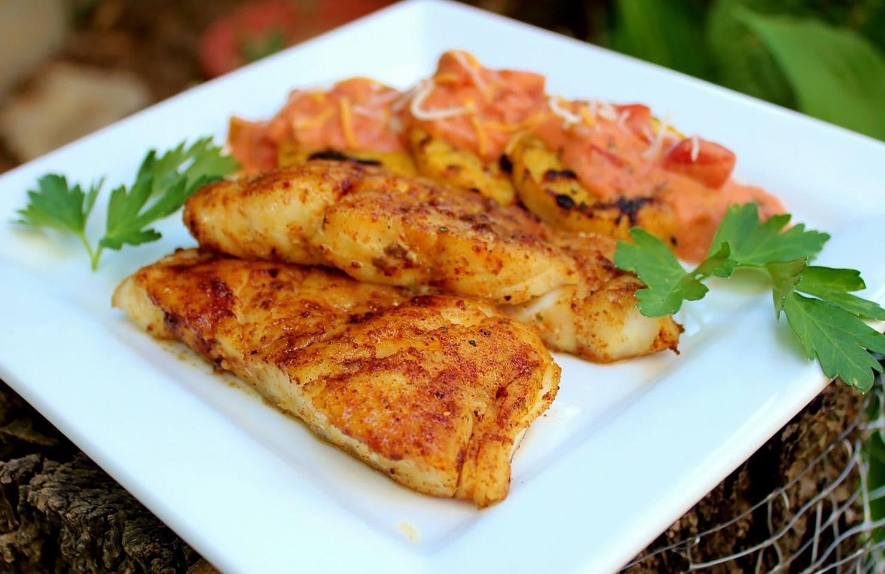

Grilled Cod

Description
Grilled cod fillets perfect for lunch.
Ingredients
- 2 (8 ounce) fillets cod, cut in half
- 1 tablespoon Cajun seasoning
- ½ teaspoon lemon pepper
- ¼ teaspoon salt
- ¼ teaspoon ground black pepper
- 2 tablespoons butter
- 1 lemon, juiced
- 2 tablespoons chopped green onion (white part only)
Steps
- Stack about 15 charcoal briquettes into a grill in a pyramid shape. If desired, drizzle coals lightly with lighter fluid and allow to soak for 1 minute before lighting coals with a match.
- Allow fire to spread to all coals, about 10 minutes, before spreading briquettes out into the grill; let coals burn until a thin layer of white ash covers the coals.
- Lightly oil the grates.
- Season both sides of cod with Cajun seasoning, lemon pepper, salt, and black pepper.
- Set fish aside on a plate.
- Heat butter in a small saucepan over medium heat, stir in lemon juice and green onion, and cook until onion is softened, about 3 minutes.
- Place cod onto oiled grates and grill until fish is browned and flakes easily, about 3 minutes per side; baste with butter mixture frequently while grilling.
- Allow cod to rest off the heat for about 5 minutes before serving.